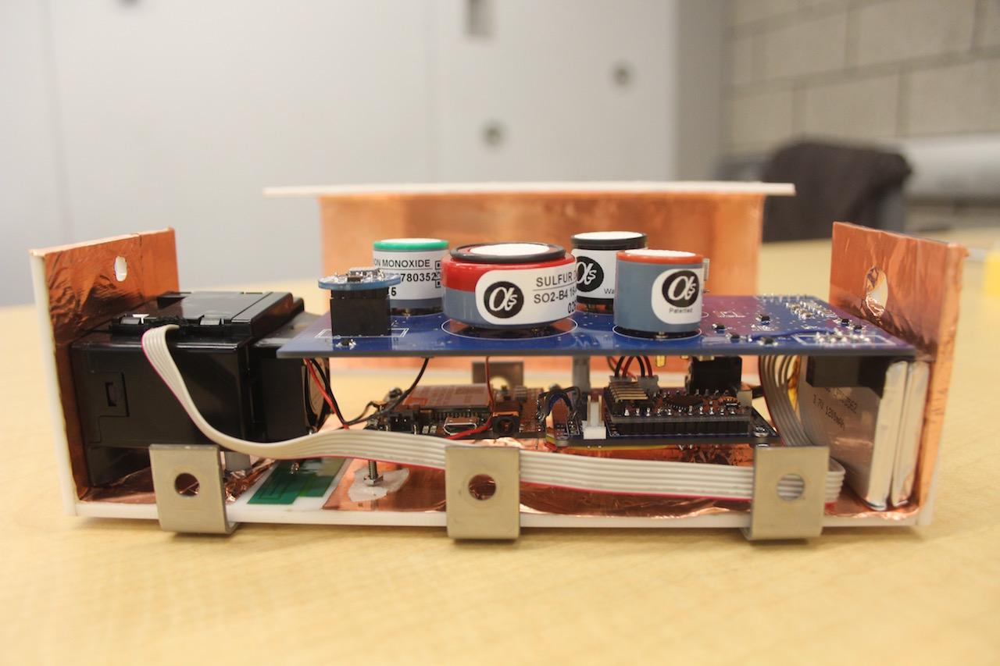
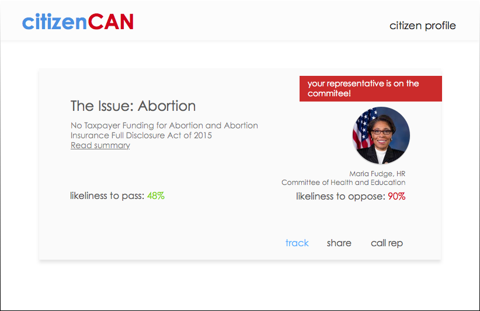

Projects
Celena (April 2016 -)
Software and design consultancy co-founder. The Consortium actualized. Holy moly, this actually happened; ask about our origin story.
EPA Air Quality Monitor (April 2016 -)
With Yale faculty and student team, developed prototype of cost-effective air quality monitors to capture high-resolution air pollution data in the city of Baltimore for a $10 million EPA research project. Designed and tested monitor’s physical components and housing.

Python Class at YHack's Code Boola.
Citizen Can (September 2015)
A web app that filters through the complexity of the federal legislative process to deliver relevant and important bills based on interest and location. Won the Fiscal Note API Prize at HackMIT 2015.

Legislative Research (June 2015)
Documented more than 200 federal regulatory crimes while working in the office of Senator Orrin Hatch. Compiled all Constitutional Convention applications ever submitted for a Balanced Budget Amendment.
Formidably (January - May 2015)
A healthcare platform that unlocks data on paper forms via optical character recognition technology (Captricity API). Optimized to tackle the complexity of data generated by contact tracing in the 2014 Ebola Crisis. Finalist in the Thorne Prize for Social Innovation in Health or Education at Yale.
SeeMail (April 2013)
Unobtrusive read receipts for email. Developed at HackPrinceton. Our team was featured on TechCrunch.
Developed for a Yale hackathon, won "Best Newcomer" award. The app dynamically pairs up lost and found items for the Yale community. Requires Yale CAS authentication to view.
Direct response charity effort to raise money for victims of Hurricane Sandy through t-shirt sales. Appeared on the Huffington Post, NBC's Style Network, local newspapers. We even did an interview with the Canadian Broadcasting Corporation from our dorm!